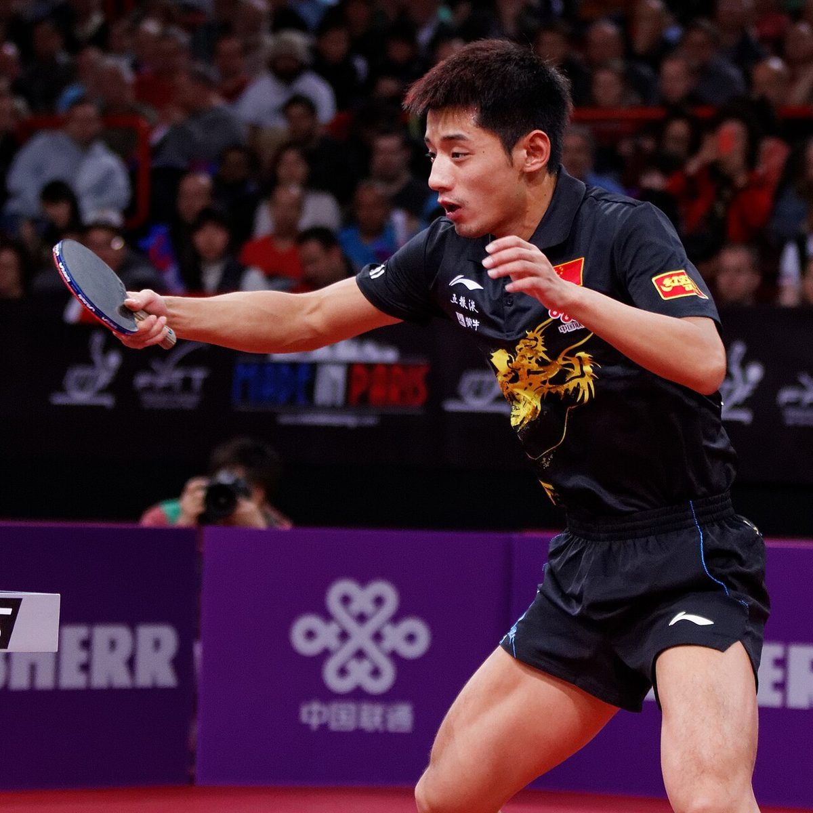

Ма Лун: от вундеркинда из Аньшаня до шести олимпийских золотых медалей
Его не включили в одиночный разряд сборной Китая на Играх-2012 в Лондоне, а затем он дважды подряд выиграл олимпийский одиночный турнир и три чемпионата мира подряд.

Ранний взлёт
Ма Лун родился 20 октября 1988 года в Аньшане, в китайской провинции Ляонин. Он выиграл юниорские чемпионаты Азии и мира, а в 17 лет стал чемпионом мира в составе сборной Китая на командном чемпионате мира 2006 года в Бремене. Среди его первых тренеров был бывший тренер национальной сборной Ма Кайсюань, позже он работал с Цинь Чжицзянем.
До 22 лет Ма 11 раз выходил в финал турниров Мирового тура ITTF и выиграл восемь из них. Он также дважды побеждал на Кубке Азии и дважды — в Гранд-финале Мирового тура.

Неудачи
С 2010 по 2014 год Ма подолгу занимал первое место в мировом рейтинге, но главные титулы в одиночном разряде ему не давались. На чемпионатах мира 2009, 2011 и 2013 годов он проигрывал в полуфинале, каждый раз — соотечественнику Ван Хао. Главный тренер сборной Лю Голян публично говорил, что у Ма есть всё необходимое, но на крупных турнирах ему иногда не хватает психологической устойчивости.
В 2012 году, после 560 дней без поражений, он сбавил: проиграл японцу Коки Ниве на азиатском олимпийском отборочном турнире и Ли Сан Су на Открытом чемпионате Кореи. Китай не заявил его в одиночный разряд на Олимпиаду в Лондоне, где он выиграл золото в командном турнире. Тем временем его соперник Чжан Цзикэ собрал карьерный «Большой шлем».
Прорыв

После третьего поражения от Ван Хао в 2013 году Ма выиграл Открытый чемпионат Китая, третий титул чемпиона Азии и Национальные игры Китая, победив в финале Фань Чжэньдуна. На командном чемпионате мира 2014 года в Токио он не проиграл ни одной партии и получил приз Виктора Барны как лучший игрок турнира.
Первый титул чемпиона мира в одиночном разряде он завоевал в 2015 году в Сучжоу, обыграв Фан Бо в шести партиях. В 2017 году в Дюссельдорфе он победил Фань Чжэньдуна в седьмой партии, а в 2019-м в Будапеште — шведа Маттиаса Фалька со счётом 4:1.
Дважды олимпийский чемпион
На Олимпиаде 2016 года в Рио Ма обыграл в финале действующего чемпиона Чжан Цзикэ 4:0 (14:12, 11:5, 11:4, 11:4). Это золото сделало его пятым мужчиной, собравшим карьерный «Большой шлем» — победы в одиночном разряде на Олимпиаде, чемпионате мира и Кубке мира. В Рио он выиграл и командное золото.
Через пять лет в Токио он победил в финале Фань Чжэньдуна 4:2, во второй раз стал олимпийским чемпионом в одиночном разряде и добавил ещё одно командное золото. Он единственный мужчина, собравший карьерный «Большой шлем» дважды.
Шесть золотых медалей и новая роль
На Олимпиаде 2024 года в Париже Ма был одним из знаменосцев сборной Китая на церемонии открытия и выиграл четвёртое командное золото. Шесть его олимпийских золотых медалей — две в одиночном разряде и четыре в командном — рекорд для настольного тенниса и для китайских спортсменов.
В общей сложности он был первой ракеткой мира 64 месяца, в том числе 34 месяца подряд с марта 2015 года. Он также трижды выигрывал Кубок мира — в 2012, 2015 и 2024 годах.
31 декабря 2024 года Ма вышел из мирового рейтинга ITTF. В апреле 2025 года его назначили вице-президентом Ассоциации настольного тенниса Китая.